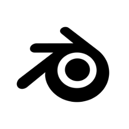
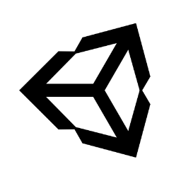
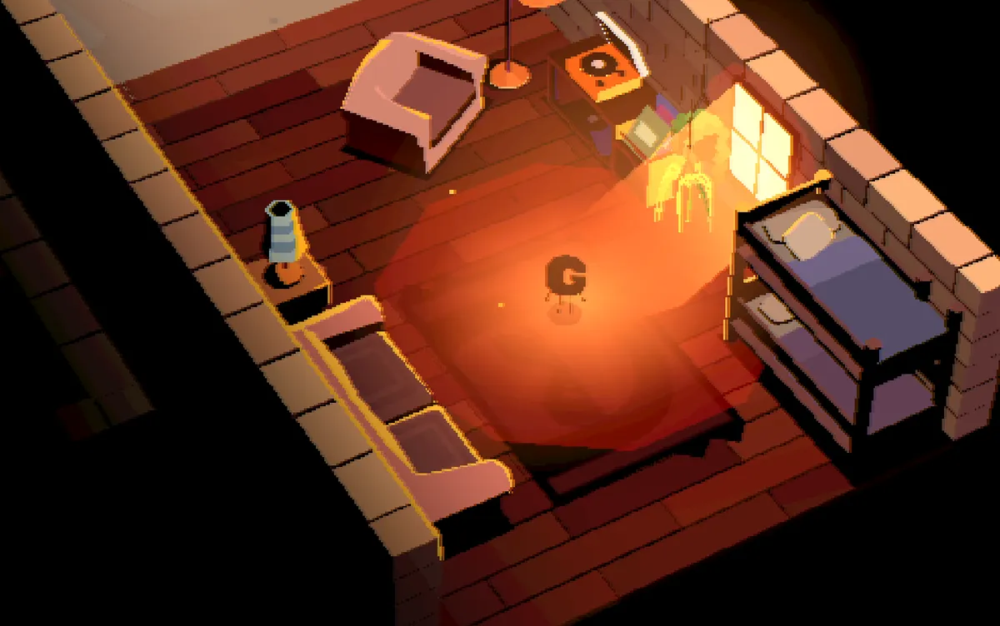
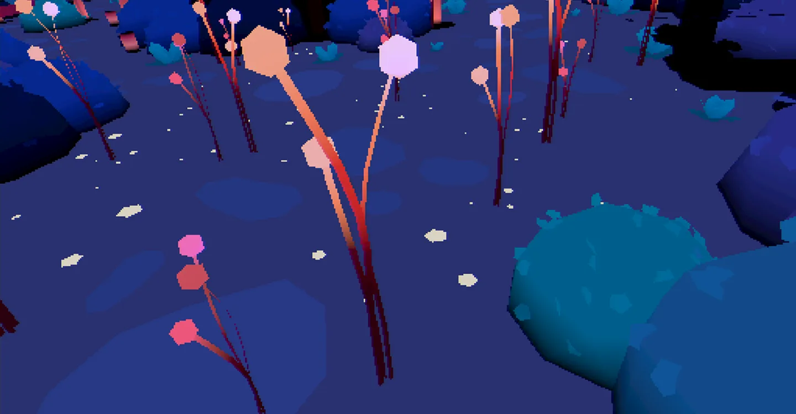
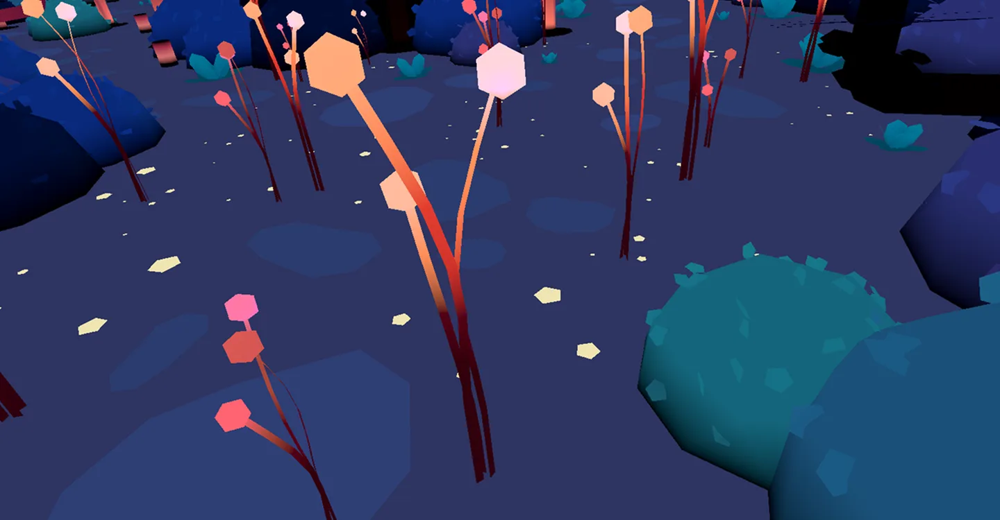
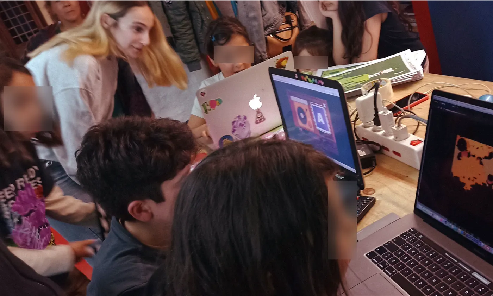

FABRIKA DE GIGANTES
Videojuego web diseñado para Revista Gigantes (La Diaria) con el objetivo de transformar el consumo pasivo de contenido en una experiencia participativa de User-Generated Content (UGC).
El proyecto funciona como puente para conectar usuarios de la revista a la plataforma digital, incrementando la retención y la participación comunitaria.
Tecnologías utilizadas
 Figma
Figma

Blender
Unity
Conceptualización Narrativa
El proyecto resuelve la paradoja de una audiencia infantil interpelada bajo el nombre de "gigantes". El juego tangibiliza esta tensión a través de un pequeño avatar que navega por el mapa y recolecta piezas para construir seres monumentales.
Para incentivar la adopción, la revista impresa incluye códigos exclusivos que desbloquean assets especiales dentro del juego. A su vez, los gigantes más votados y creativos generados por los usuarios tienen la posibilidad de aparecer en las siguientes ediciones impresas de la revista.
Crear un gigante constituye una metáfora interactiva sobre la capacidad de las infancias para intervenir en su entorno y dejar una marca propia en la comunidad.
Limitaciones técnicas
Para garantizar la equidad en el acceso, el rendimiento del software se optimizó para hardware de gama baja y computadoras escolares de recursos limitados.
El estilo visual y el modelado 3D de los assets se diseñaron bajo una restricción de baja carga computacional: se implementó una técnica de texturizado pixelado combinada con un renderizado plano basado exclusivamente en un valor de luz y un valor de sombra (estilo cel-shading de alto contraste).
Esta solución técnica redujo drásticamente el consumo de memoria gráfica, asegurando una tasa de cuadros por segundo estable sin sacrificar la identidad artística del proyecto.


RenderizadoValidaciones
Como responsable del flujo de experiencia, la UI y el diseño de entornos, lideré el mapeo de interacciones adaptado a modelos mentales infantiles.
Conduje sesiones de testeo con niños para validar la usabilidad de la interfaz, la navegación en los mapas y la fricción en el sistema de construcción de piezas.
Estas pruebas permitieron iterar la jerarquía visual de los controles, simplificar la arquitectura de la información y asegurar que el storyline actuara como un hilo conductor intuitivo sin necesidad de tutoriales complejos.
